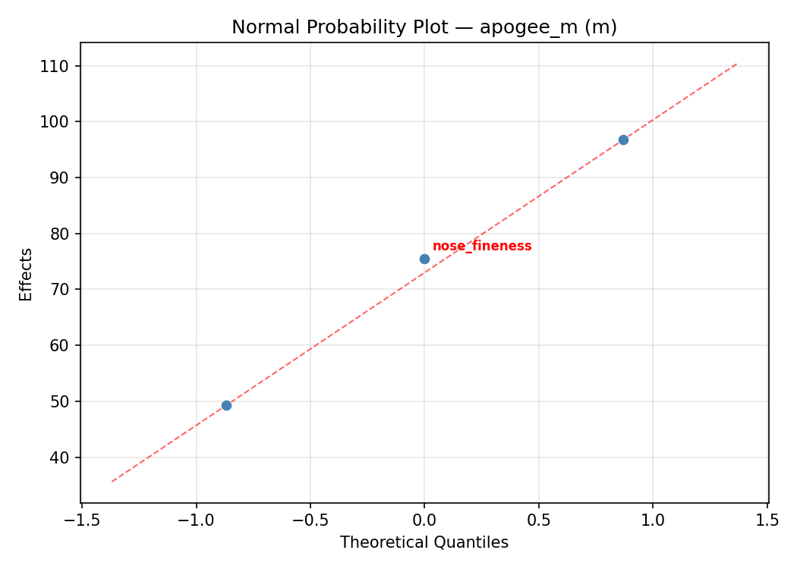
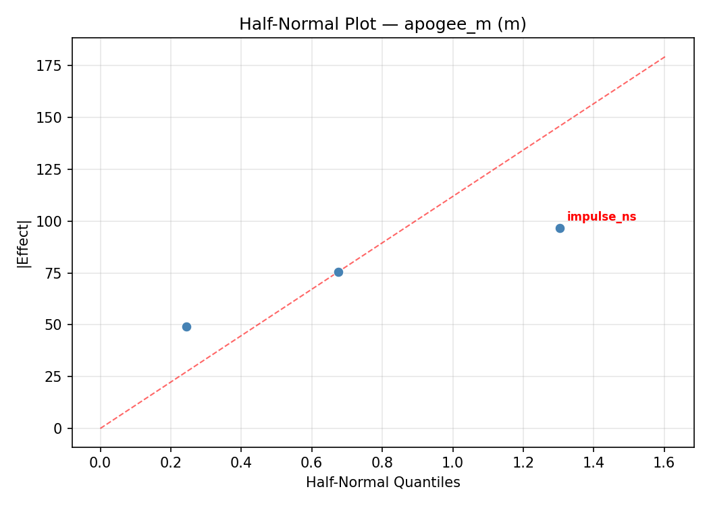
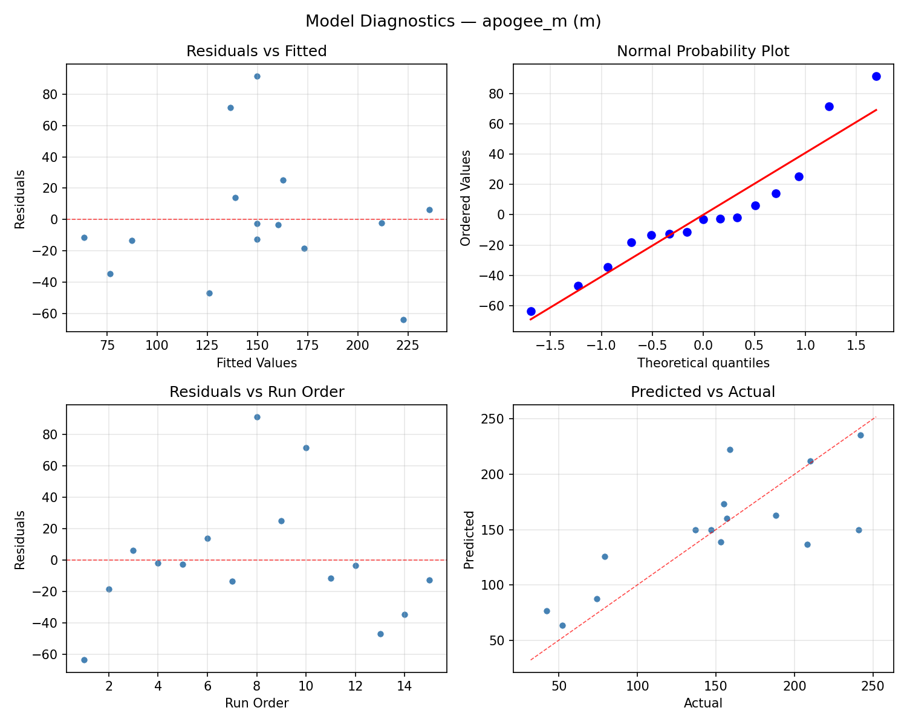
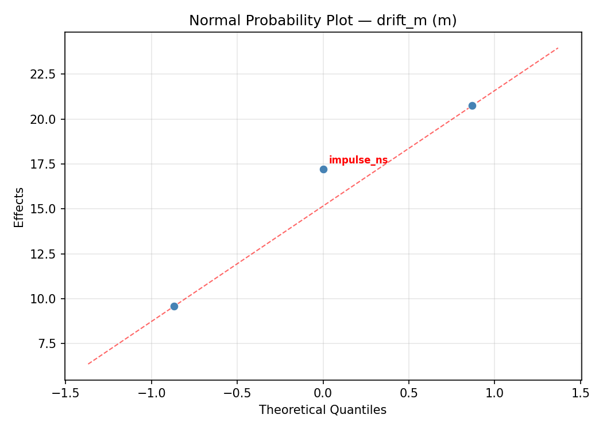
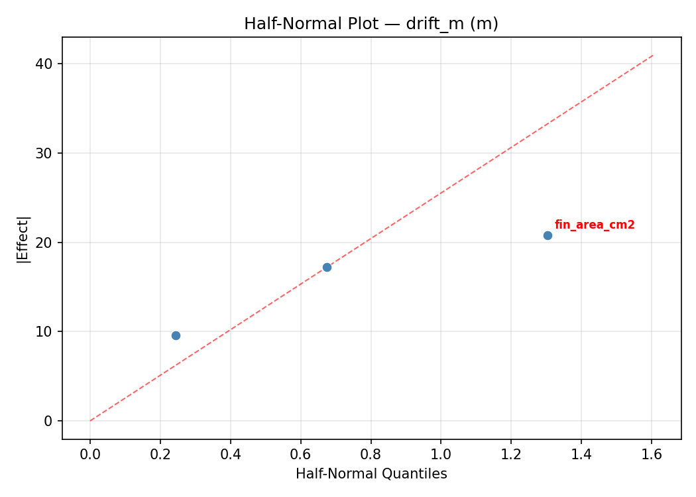
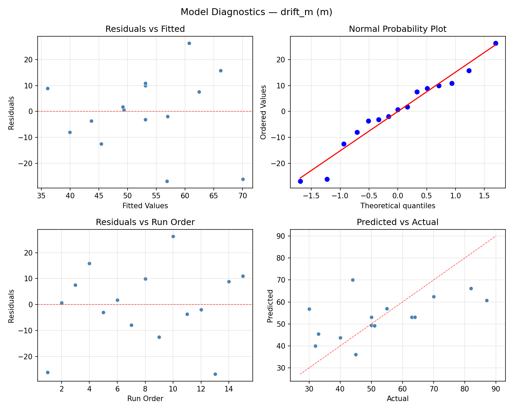

Summary
This experiment investigates model rocket flight optimization. Box-Behnken design to maximize apogee altitude and minimize drift by tuning motor impulse, fin area, and nose cone shape factor.
The design varies 3 factors: impulse ns (Ns), ranging from 5 to 40, fin area cm2 (cm2), ranging from 20 to 80, and nose fineness (ratio), ranging from 3 to 7. The goal is to optimize 2 responses: apogee m (m) (maximize) and drift m (m) (minimize). Fixed conditions held constant across all runs include body diam = 25mm, recovery = parachute.
A Box-Behnken design was chosen because it efficiently fits quadratic models with 3 continuous factors while avoiding extreme corner combinations — requiring only 15 runs instead of the 8 needed for a full factorial at two levels.
Quadratic response surface models were fitted to capture potential curvature and factor interactions. The RSM contour plots below visualize how pairs of factors jointly affect each response.
Key Findings
For apogee m, the most influential factors were nose fineness (34.4%), fin area cm2 (34.3%), impulse ns (31.3%). The best observed value was 242.0 (at impulse ns = 40, fin area cm2 = 80, nose fineness = 5).
For drift m, the most influential factors were fin area cm2 (48.6%), impulse ns (38.5%), nose fineness (12.9%). The best observed value was 30.0 (at impulse ns = 40, fin area cm2 = 50, nose fineness = 3).
Recommended Next Steps
- Run confirmation experiments at the predicted optimal settings to validate the model.
- Consider whether any fixed factors should be varied in a future study.
Experimental Setup
Factors
| Factor | Low | High | Unit |
|---|
impulse_ns | 5 | 40 | Ns |
fin_area_cm2 | 20 | 80 | cm2 |
nose_fineness | 3 | 7 | ratio |
Fixed: body_diam = 25mm, recovery = parachute
Responses
| Response | Direction | Unit |
|---|
apogee_m | ↑ maximize | m |
drift_m | ↓ minimize | m |
Configuration
{
"metadata": {
"name": "Model Rocket Flight Optimization",
"description": "Box-Behnken design to maximize apogee altitude and minimize drift by tuning motor impulse, fin area, and nose cone shape factor"
},
"factors": [
{
"name": "impulse_ns",
"levels": [
"5",
"40"
],
"type": "continuous",
"unit": "Ns"
},
{
"name": "fin_area_cm2",
"levels": [
"20",
"80"
],
"type": "continuous",
"unit": "cm2"
},
{
"name": "nose_fineness",
"levels": [
"3",
"7"
],
"type": "continuous",
"unit": "ratio"
}
],
"fixed_factors": {
"body_diam": "25mm",
"recovery": "parachute"
},
"responses": [
{
"name": "apogee_m",
"optimize": "maximize",
"unit": "m"
},
{
"name": "drift_m",
"optimize": "minimize",
"unit": "m"
}
],
"settings": {
"operation": "box_behnken",
"test_script": "use_cases/261_model_rocket_flight/sim.sh"
}
}
Experimental Matrix
The Box-Behnken Design produces 15 runs. Each row is one experiment with specific factor settings.
| Run | impulse_ns | fin_area_cm2 | nose_fineness |
|---|
| 1 | 22.5 | 20 | 3 |
| 2 | 22.5 | 50 | 5 |
| 3 | 40 | 50 | 7 |
| 4 | 40 | 50 | 3 |
| 5 | 22.5 | 50 | 5 |
| 6 | 22.5 | 50 | 5 |
| 7 | 5 | 50 | 7 |
| 8 | 40 | 20 | 5 |
| 9 | 22.5 | 20 | 7 |
| 10 | 40 | 80 | 5 |
| 11 | 5 | 50 | 3 |
| 12 | 22.5 | 80 | 7 |
| 13 | 5 | 20 | 5 |
| 14 | 5 | 80 | 5 |
| 15 | 22.5 | 80 | 3 |
Step-by-Step Workflow
1
Preview the design
$ python doe.py info --config use_cases/261_model_rocket_flight/config.json
2
Generate the runner script
$ python doe.py generate --config use_cases/261_model_rocket_flight/config.json \
--output use_cases/261_model_rocket_flight/results/run.sh --seed 42
3
Execute the experiments
$ bash use_cases/261_model_rocket_flight/results/run.sh
4
Analyze results
$ python doe.py analyze --config use_cases/261_model_rocket_flight/config.json
5
Get optimization recommendations
$ python doe.py optimize --config use_cases/261_model_rocket_flight/config.json
6
Multi-objective optimization
With 2 competing responses, use --multi to find the best compromise via Derringer–Suich desirability.
$ python doe.py optimize --config use_cases/261_model_rocket_flight/config.json --multi
7
Generate the HTML report
$ python doe.py report --config use_cases/261_model_rocket_flight/config.json \
--output use_cases/261_model_rocket_flight/results/report.html
Features Exercised
| Feature | Value |
|---|
| Design type | box_behnken |
| Factor types | continuous (all 3) |
| Arg style | double-dash |
| Responses | 2 (apogee_m ↑, drift_m ↓) |
| Total runs | 15 |
Analysis Results
Generated from actual experiment runs using the DOE Helper Tool.
Response: apogee_m
Top factors: nose_fineness (34.4%), fin_area_cm2 (34.3%), impulse_ns (31.3%).
ANOVA
| Source | DF | SS | MS | F | p-value |
|---|
| Source | DF | SS | MS | F | p-value |
| impulse_ns | 2 | 7888.1000 | 3944.0500 | 1.174 | 0.3571 |
| fin_area_cm2 | 2 | 8973.8857 | 4486.9429 | 1.336 | 0.3158 |
| nose_fineness | 2 | 11350.6714 | 5675.3357 | 1.690 | 0.2442 |
| Lack | of | Fit | 6 | 22648.2762 | 3774.7127 |
| Pure | Error | 2 | 6716.6667 | | |
| Error | 8 | 29364.9429 | 3358.3333 | | |
| Total | 14 | 57577.6000 | 4112.6857 | | |
Pareto Chart

Main Effects Plot

Normal Probability Plot of Effects

Half-Normal Plot of Effects

Model Diagnostics

Response: drift_m
Top factors: fin_area_cm2 (48.6%), impulse_ns (38.5%), nose_fineness (12.9%).
ANOVA
| Source | DF | SS | MS | F | p-value |
|---|
| Source | DF | SS | MS | F | p-value |
| impulse_ns | 2 | 609.7548 | 304.8774 | 3.143 | 0.0983 |
| fin_area_cm2 | 2 | 1022.7548 | 511.3774 | 5.272 | 0.0346 |
| nose_fineness | 2 | 83.7190 | 41.8595 | 0.432 | 0.6638 |
| Lack | of | Fit | 6 | 2306.7048 | 384.4508 |
| Pure | Error | 2 | 194.0000 | | |
| Error | 8 | 2500.7048 | 97.0000 | | |
| Total | 14 | 4216.9333 | 301.2095 | | |
Pareto Chart

Main Effects Plot

Normal Probability Plot of Effects

Half-Normal Plot of Effects

Model Diagnostics

Response Surface Plots
3D surfaces fitted with quadratic RSM. Red dots are observed data points.
apogee m fin area cm2 vs nose fineness

apogee m impulse ns vs fin area cm2

apogee m impulse ns vs nose fineness

drift m fin area cm2 vs nose fineness

drift m impulse ns vs fin area cm2

drift m impulse ns vs nose fineness

Multi-Objective Optimization
When responses compete, Derringer–Suich desirability finds the best compromise.
Each response is scaled to a 0–1 desirability, then combined via a weighted geometric mean.
Overall Desirability
D = 0.8285
Per-Response Desirability
| Response | Weight | Desirability | Predicted | Dir |
|---|
apogee_m |
1.5 |
|
233.45 0.9157 233.45 m |
↑ |
drift_m |
1.0 |
|
45.14 0.7131 45.14 m |
↓ |
Recommended Settings
| Factor | Value |
|---|
impulse_ns | 40 Ns |
fin_area_cm2 | 80 cm2 |
nose_fineness | 5.8 ratio |
Source: from RSM model prediction
Trade-off Summary
Sacrifice = how much worse than single-objective best.
| Response | Predicted | Best Observed | Sacrifice |
|---|
drift_m | 45.14 | 30.00 | +15.14 |
Top 3 Runs by Desirability
| Run | D | Factor Settings |
|---|
| #8 | 0.6907 | impulse_ns=22.5, fin_area_cm2=80, nose_fineness=7 |
| #1 | 0.6345 | impulse_ns=5, fin_area_cm2=80, nose_fineness=5 |
Model Quality
| Response | R² | Type |
|---|
drift_m | 0.9104 | quadratic |
Full Multi-Objective Output
============================================================
MULTI-OBJECTIVE OPTIMIZATION
Method: Derringer-Suich Desirability Function
============================================================
Overall desirability: D = 0.8285
Response Weight Desirability Predicted Direction
---------------------------------------------------------------------
apogee_m 1.5 0.9157 233.45 m ↑
drift_m 1.0 0.7131 45.14 m ↓
Recommended settings:
impulse_ns = 40 Ns
fin_area_cm2 = 80 cm2
nose_fineness = 5.8 ratio
(from RSM model prediction)
Trade-off summary:
apogee_m: 233.45 (best observed: 242.00, sacrifice: +8.55)
drift_m: 45.14 (best observed: 30.00, sacrifice: +15.14)
Model quality:
apogee_m: R² = 0.8841 (quadratic)
drift_m: R² = 0.9104 (quadratic)
Top 3 observed runs by overall desirability:
1. Run #9 (D=0.7824): impulse_ns=40, fin_area_cm2=80, nose_fineness=5
2. Run #8 (D=0.6907): impulse_ns=22.5, fin_area_cm2=80, nose_fineness=7
3. Run #1 (D=0.6345): impulse_ns=5, fin_area_cm2=80, nose_fineness=5
Full Analysis Output
=== Main Effects: apogee_m ===
Factor Effect Std Error % Contribution
--------------------------------------------------------------
nose_fineness 57.9643 16.5584 34.4%
fin_area_cm2 57.9286 16.5584 34.3%
impulse_ns 52.7500 16.5584 31.3%
=== ANOVA Table: apogee_m ===
Source DF SS MS F p-value
-----------------------------------------------------------------------------
impulse_ns 2 7888.1000 3944.0500 1.174 0.3571
fin_area_cm2 2 8973.8857 4486.9429 1.336 0.3158
nose_fineness 2 11350.6714 5675.3357 1.690 0.2442
Lack of Fit 6 22648.2762 3774.7127 1.124 0.5412
Pure Error 2 6716.6667 3358.3333
Error 8 29364.9429 3358.3333
Total 14 57577.6000 4112.6857
=== Summary Statistics: apogee_m ===
impulse_ns:
Level N Mean Std Min Max
------------------------------------------------------------
22.5 7 126.0000 56.2554 42.0000 188.0000
40 4 178.7500 78.5042 79.0000 242.0000
5 4 161.7500 63.8037 74.0000 210.0000
fin_area_cm2:
Level N Mean Std Min Max
------------------------------------------------------------
20 4 109.5000 54.4946 52.0000 159.0000
50 7 167.4286 70.5333 42.0000 242.0000
80 4 158.5000 57.2858 79.0000 210.0000
nose_fineness:
Level N Mean Std Min Max
------------------------------------------------------------
3 4 178.2500 42.5314 155.0000 242.0000
5 7 120.2857 57.8611 42.0000 210.0000
7 4 172.2500 83.0918 52.0000 241.0000
=== Main Effects: drift_m ===
Factor Effect Std Error % Contribution
--------------------------------------------------------------
fin_area_cm2 19.5357 4.4811 48.6%
impulse_ns 15.4643 4.4811 38.5%
nose_fineness 5.1786 4.4811 12.9%
=== ANOVA Table: drift_m ===
Source DF SS MS F p-value
-----------------------------------------------------------------------------
impulse_ns 2 609.7548 304.8774 3.143 0.0983
fin_area_cm2 2 1022.7548 511.3774 5.272 0.0346
nose_fineness 2 83.7190 41.8595 0.432 0.6638
Lack of Fit 6 2306.7048 384.4508 3.963 0.2151
Pure Error 2 194.0000 97.0000
Error 8 2500.7048 97.0000
Total 14 4216.9333 301.2095
=== Summary Statistics: drift_m ===
impulse_ns:
Level N Mean Std Min Max
------------------------------------------------------------
22.5 7 47.2857 10.1606 33.0000 64.0000
40 4 53.5000 17.5214 30.0000 70.0000
5 4 62.7500 26.2472 32.0000 87.0000
fin_area_cm2:
Level N Mean Std Min Max
------------------------------------------------------------
20 4 41.7500 7.9320 32.0000 51.0000
50 7 61.2857 14.5340 45.0000 87.0000
80 4 50.0000 24.0693 30.0000 82.0000
nose_fineness:
Level N Mean Std Min Max
------------------------------------------------------------
3 4 54.7500 11.1168 44.0000 70.0000
5 7 50.5714 18.1095 30.0000 82.0000
7 4 55.7500 24.4591 33.0000 87.0000
Optimization Recommendations
=== Optimization: apogee_m ===
Direction: maximize
Best observed run: #3
impulse_ns = 40
fin_area_cm2 = 80
nose_fineness = 5
Value: 242.0
RSM Model (linear, R² = 0.2386, Adj R² = 0.0309):
Coefficients:
intercept +149.6000
impulse_ns -8.0000
fin_area_cm2 +40.2500
nose_fineness -5.7500
RSM Model (quadratic, R² = 0.7110, Adj R² = 0.1908):
Coefficients:
intercept +153.0000
impulse_ns -8.0000
fin_area_cm2 +40.2500
nose_fineness -5.7500
impulse_ns*fin_area_cm2 +16.2500
impulse_ns*nose_fineness -4.2500
fin_area_cm2*nose_fineness +13.7500
impulse_ns^2 -65.1250
fin_area_cm2^2 +42.8750
nose_fineness^2 +15.8750
Curvature analysis:
impulse_ns coef=-65.1250 concave (has a maximum)
fin_area_cm2 coef=+42.8750 convex (has a minimum)
nose_fineness coef=+15.8750 convex (has a minimum)
Notable interactions:
impulse_ns*fin_area_cm2 coef=+16.2500 (synergistic)
fin_area_cm2*nose_fineness coef=+13.7500 (synergistic)
impulse_ns*nose_fineness coef=-4.2500 (antagonistic)
Predicted optimum (from quadratic model, at observed points):
impulse_ns = 22.5
fin_area_cm2 = 80
nose_fineness = 7
Predicted value: 260.0000
Surface optimum (via L-BFGS-B, quadratic model):
impulse_ns = 23.0374
fin_area_cm2 = 80
nose_fineness = 7
Predicted value: 260.0614
Model quality: Good fit — general trends are captured, some noise remains.
Factor importance:
1. fin_area_cm2 (effect: 86.6, contribution: 46.3%)
2. impulse_ns (effect: 77.3, contribution: 41.3%)
3. nose_fineness (effect: 23.2, contribution: 12.4%)
=== Optimization: drift_m ===
Direction: minimize
Best observed run: #13
impulse_ns = 40
fin_area_cm2 = 50
nose_fineness = 3
Value: 30.0
RSM Model (linear, R² = 0.3057, Adj R² = 0.1164):
Coefficients:
intercept +53.0667
impulse_ns -4.0000
fin_area_cm2 +10.3750
nose_fineness -6.1250
RSM Model (quadratic, R² = 0.6163, Adj R² = -0.0743):
Coefficients:
intercept +48.3333
impulse_ns -4.0000
fin_area_cm2 +10.3750
nose_fineness -6.1250
impulse_ns*fin_area_cm2 +7.0000
impulse_ns*nose_fineness +1.5000
fin_area_cm2*nose_fineness +6.2500
impulse_ns^2 -9.0417
fin_area_cm2^2 +8.7083
nose_fineness^2 +9.2083
Curvature analysis:
nose_fineness coef=+9.2083 convex (has a minimum)
impulse_ns coef=-9.0417 concave (has a maximum)
fin_area_cm2 coef=+8.7083 convex (has a minimum)
Notable interactions:
impulse_ns*fin_area_cm2 coef=+7.0000 (synergistic)
fin_area_cm2*nose_fineness coef=+6.2500 (synergistic)
impulse_ns*nose_fineness coef=+1.5000 (synergistic)
Predicted optimum (from linear model, at observed points):
impulse_ns = 22.5
fin_area_cm2 = 80
nose_fineness = 3
Predicted value: 69.5667
Surface optimum (via L-BFGS-B, linear model):
impulse_ns = 40
fin_area_cm2 = 20
nose_fineness = 7
Predicted value: 32.5667
Model quality: Weak fit — consider adding center points or using a different design.
Factor importance:
1. fin_area_cm2 (effect: 20.8, contribution: 41.1%)
2. nose_fineness (effect: 15.4, contribution: 30.5%)
3. impulse_ns (effect: 14.3, contribution: 28.4%)